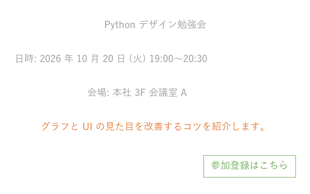
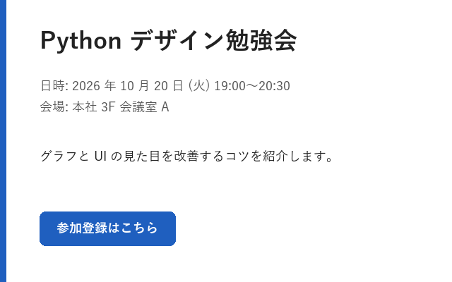

1. デザインの基本原則
1.1. デザインの目的
デザインの目的は、読み手が情報を「速く」「正しく」受け取れるようにすることです。見た目の好みは人によって異なりますが、情報が整理されているかどうかは、読み手がどれだけ迷わずに要点をつかめるかで判断できます。
本章では、あらゆる媒体に共通する 4 つの原則と、その原則が有効である理由となる視覚の性質を説明します。
1.2. デザインの 4 原則
デザインを専門としない人向けの入門書として広く読まれている『ノンデザイナーズ・デザインブック』（Robin Williams 著）では、デザインの基本として次の 4 原則を挙げています。
原則 |
内容 |
エンジニアの成果物での例 |
|---|---|---|
近接 |
関係の深い要素を近づけ、関係の浅い要素を離します。距離によってグループを表します。 |
グラフの凡例を対応する線の近くに置きます。入力欄のラベルを入力欄のすぐ上に置きます。 |
整列 |
すべての要素を、見えない線に揃えて配置します。 |
画面内のラベルと入力欄の左端を揃えます。 |
反復 |
同じ意味を持つ要素には、同じ色・形・大きさを繰り返し使います。 |
資料全体で、強調には同じ 1 色だけを使います。 |
コントラスト |
異なるものは、はっきりと異ならせます。中途半端な差を作りません。 |
見出しは本文より十分に大きく太くします。主要なボタンだけを塗りつぶします。 |
図 1.1 と図 1.2 は、同じ内容のイベント告知カードです。

図 1.1 改善前：要素が散らばり、どこから読めばよいか分からない

図 1.2 改善後：4 原則を適用して情報を整理した
改善前のカードでは、4 原則が次のように守られていません。
整列：中央揃えと左揃えが混在し、要素の位置に規則がありません。
近接：すべての要素が等間隔に並び、日時と会場のまとまりが分かりません。
コントラスト：タイトルも本文も同じ大きさで、背景との明度差も小さくなっています。
反復：説明文はオレンジ、ボタンは緑と、色に意味がありません。
改善後のカードでは、すべての要素の左端を x 座標 56 px の位置に揃えています。日時と会場は間隔を詰めて 1 つのグループにし、グループ間には大きな余白を取っています。タイトルは大きく太くし、アクセントカラーの青を左端の帯とボタンの 2 か所で繰り返しています。
改善後のカードを描画するコードは次のとおりです。座標や色を数値で指定するため、「なぜその位置なのか」を説明できる値にしておくことが大切です。
def draw_after() -> Image.Image:
"""4 原則を適用したカードを描画する。"""
image = Image.new("RGB", (WIDTH, HEIGHT), "white")
draw = ImageDraw.Draw(image)
accent = "#1f5fbf" # アクセントカラー (反復して使う)
text_main = "#222222"
text_sub = "#555555"
left = 56 # すべての要素をこの x 座標に揃える (整列)
# アクセントカラーの帯で、カードの始まりを示す
draw.rectangle((0, 0, 8, HEIGHT), fill=accent)
# タイトルは大きく太く (コントラスト)
draw.text((left, 40), TITLE, font=load_font(34, bold=True),
fill=text_main)
# 日時と会場は関係が深いので近づける (近接)
info_font = load_font(18)
draw.text((left, 112), DATE, font=info_font, fill=text_sub)
draw.text((left, 142), PLACE, font=info_font, fill=text_sub)
# 説明文はグループ間の余白を大きく取って区別する
draw.text((left, 212), DESCRIPTION, font=load_font(18), fill=text_main)
# ボタンはアクセントカラーで塗り、押せる要素であることを示す
button_font = load_font(18, bold=True)
button_w = text_width(draw, BUTTON, button_font) + 48
draw.rounded_rectangle((left, 300, left + button_w, 348), radius=8,
fill=accent)
# anchor="lm" で、文字列の左端・上下中央を指定座標に合わせる
draw.text((left + 24, 324), BUTTON, font=button_font, fill="white",
anchor="lm")
return image
1.3. 視覚の性質：ゲシュタルトの法則
4 原則が有効なのは、人の視覚には、個々の要素をまとまりとして捉えようとする性質があるためです。この性質は、ゲシュタルト心理学で「ゲシュタルトの法則（群化の法則）」としてまとめられています。
法則 |
内容 |
活用例 |
|---|---|---|
近接の法則 |
近くにある要素は、同じグループに見えます。 |
余白の大小だけで、区切り線を使わずにグループを表します。 |
類同の法則 |
色や形が似ている要素は、同じグループに見えます。 |
同じ系列のデータ点を同じ色で描きます。 |
共通領域の法則 |
線や枠で囲まれた領域の中にある要素は、同じグループに見えます。 |
関連する設定項目をカードや枠で囲みます。 |
連続の法則 |
滑らかにつながる線上の要素は、一続きに見えます。 |
折れ線グラフで、線を追えば推移が読めるようにします。 |
4 原則との対応でいえば、近接の原則は近接の法則を、反復の原則は類同の法則を利用しています。整列の原則は、揃った端が 1 本の線に見える連続の法則を利用しています。反対に、関係のない要素に同じ色を使ったり、無関係な要素を近くに置いたりすると、読み手は存在しない関係を読み取ってしまいます。
1.4. 視線の流れ
横書きの文化圏では、読み手の視線は基本的に左上から右下へ流れます。よく知られた型として、次の 2 つがあります。
- Z 型
文字が少なく、図や写真が中心の画面では、視線は左上 → 右上 → 左下 → 右下と Z 字を描くように動く傾向があります。ポスターやスライドの表紙が該当します。
- F 型
文章が多い画面では、読み手は上部を横に読み、その後は左端を縦に流し読みする傾向があります。Nielsen Norman Group の視線計測調査で報告された型です。
どちらの型でも、左上は最初に見られる位置です。最も重要な情報（結論やタイトル）は左上に置き、フォームやダイアログで操作の最後に押すボタンは右下に置くと、視線の流れに沿った配置になります。図 1.2 のカードでは、整列を優先してボタンも左端に揃えています。
1.5. 余白の役割
余白は「何もない空間」ではなく、要素のまとまりと区切りを表すための要素です。エンジニアが作る画面や資料では、情報を詰め込みすぎて余白が不足する例がよく見られます。余白を十分に取ると情報量が減ったように感じられますが、実際には読み手が 1 つひとつの要素を認識しやすくなります。
余白の大きさは、関係の深さに応じて段階を付けます。グループ内の余白は小さく、グループ間の余白は大きくします。段階の決め方はレイアウトで説明します。
1.6. まとめ
デザインの目的は、情報を速く正しく伝えることです。
近接・整列・反復・コントラストの 4 原則は、人の視覚の性質に基づいています。
最も重要な情報は、最初に見られる左上に置きます。
余白は、要素のまとまりを表すために積極的に使います。
1.7. サンプルコード
ch01_principles.py：図 1.1 と図 1.2 を描画します。